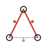
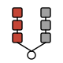
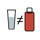
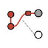
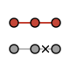
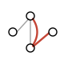
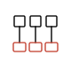

How we test¶
kpnn2 turns a named edgelist into the wiring of a neural net.
A bug that drops a skip edge, lets an
edge outside the edgelist influence a prediction, or mislabels an
attribution axis is a scientific error,
not only a software bug. The test suite is
built around that.
This page is an overview of what the tests claim, not a
catalog of every test_* function. It has three parts: the
scientific claims, which ask whether the
named graph really constrains the model; the
technical claims underneath them; and an explicit list of what
none of it proves. The files live on
GitHub under
tests/.
CI runs the full pytest suite, including the slow controls, on every change. That is a process check; the scientific argument is the claims below.
A separate, frozen notebook repeats one published simulation with these primitives: Fortelny and Bock, 2020. That page is not part of the test suite.
Two kinds of correctness¶
Technical. The parsers, masks,
packed layers, alignment, and
checkpoints do what the public contract says. A cycle is
rejected by parse_layered. A masked-out weight cannot affect
the output. PackedLinear matches MaskedLinear on the same
graph.
Scientific. The named graph is the architecture. A node with no live path to the attributed output must not score as important. An edge that is not in the edgelist must not influence a prediction. A shuffled or rewired prior must not look like a recovery of the true nodes.
Scientific correctness is the distinctive part of the suite. It
lives in
tests/controls/,
with a few related checks in
tests/module/.
Scientific correctness¶
These checks use small graphs with a known live set: which inputs and hidden nodes can affect a chosen output. The tests do not ask whether a real biological prior is true. They ask whether the primitives respect the prior they were given.
A control graph needs edges that carry no signal, and an edge can be inert in two ways:
- Absent. The pair is not a row of the edgelist. There is no mask entry and no parameter.
- Dead. The pair is a row of the edgelist, so node roles stay the same, but tests pin that weight to 0.
Live-path labels¶
Every later check needs to know which names should score as important, so the definition comes first. A name is important if and only if some path of live edges, edges the graph actually has, runs from an input through that name to at least one attributed output.
Each control graph declares those labels by hand. An independent reachability solver derives them from the edgelist and the dead pins. The two must match, so a mistake in the hand-written labels cannot cancel a mistake in the model.
Pinned in
tests/controls/ground_truth.py
and
tests/controls/test_ground_truth.py.
Graphs include a disconnected decoy tower, a dead first
hop — everything arriving at one layer — a
skip, multiple outputs, and live units that are not at tensor
index 0.
Pinned-weight importance¶

The first check takes training out of the picture, so that nothing but the wiring can explain a score. Weights on live edges are pinned, dead edges stay at 0, and the net is linear, so every live path carries a deterministic nonzero score.
Feature scores are |input gradient|. Hidden scores are
|activation × layer gradient| at that node's layer. Dead
names must sit near zero. Live names must sit above a floor.
Swapping the important and unimportant labels must fail: the assertion is sensitive to the ground truth, not a tautology.
Pinned in
tests/controls/test_structural_importance.py.
Trained importance¶

The next check lets training set the weights. Two structurally
matched towers are both wired to prediction, but only tower A
generates the labels. After a learnability gate (held-out
ROC-AUC high enough that the net actually fit), autograd scores
must rank the data-generating tower above the decoy.
The cases are a linear no-bias net, the same graph with ReLU and bias, and a ReLU net whose labels are a product of tower-A features. Each case uses a block of seeds and a pass-rate floor, not a lucky window of five runs.
Pinned in
tests/controls/test_trained_importance.py.
Negative controls¶

These break what trained importance is supposed to detect.
- Shuffled labels. Training on permuted
ymust not separate tower A from tower B, and must not fit the permuted task. Same idea as Adebayo et al., 2018: a saliency method that still “recovers” structure after the labels are destroyed is following topology, not the data. - Swapped labels. Take a model that did pass the learnability gate, then swap which tower is called important: the trained criterion must fail.
Pinned in
tests/controls/test_negative_controls.py.
Rewired prior¶

A prior only constrains a model if breaking the prior breaks
the fit. Both graphs here use the same feature names and the
same simulator, whose labels are linear in tower A. G_true
gives both towers a path to prediction. G_broken keeps the
names but ends tower A at decoy_readout, with no live path to
the task output.
G_true must fit. G_broken must stay at chance. If a model
can learn the labels without a live path from the causal
features, the named graph is not actually constraining the
hypothesis.
Pinned in
tests/controls/test_rewired_prior.py.
Edges that are not in the graph¶

An absent edge has no weight to pin, so the claim is about the prediction itself. In a graph of two disjoint paths, raising a feature that feeds only a decoy output must not change the prediction, either in the forward pass or in the input gradient.
Pinned in
tests/module/test_absent_edge_influence.py.
Skip edges make the opposite claim: they are in the graph, as ordinary packed pairs of the target hop, not a second module. A skip therefore still drives the target when the adjacent chain is ReLU-zeroed. Zeroing only that packed weight removes only that term. Gradient reaches the skip source directly.
Pinned in
tests/module/test_hop_forward.py.
Skip edges is the design.
Unrolled adjacency¶

A parse_adjacency graph has no layers: the user applies one
shared state vector, one unit per
node, T times, so how far a signal travels
depends on T. The step count therefore enters the ground
truth. A walk that needs three hops is dead at T=2 and live
at T=3 on the same edgelist, which makes unbounded DAG
reachability the wrong labels here. T is chosen in the test,
not by kpnn2.
Pinned-weight scores on a linear PackedLinear must match those
T-bounded labels. Swapping the T=2 and T=3 labels must fail.
After several extra steps, a feature that feeds only a decoy
must still not change the prediction. Dropping the self-loop
that would carry an early pulse must leave the net at chance.
Packed attention is the same absent-pair claim in another module: a key that is not a live edgelist source must not influence a query.
Pinned in
tests/controls/unroll.py,
tests/controls/test_unroll.py,
tests/controls/test_unrolled_importance.py,
tests/controls/test_unrolled_absent_edge.py,
and
tests/controls/test_no_memory_prior.py.
Attention pairs are pinned in
tests/module/test_packed_attention_structure.py,
tests/module/test_packed_attention_kernel.py,
and
tests/module/test_packed_attention_chunk_size.py.
Name mapping¶

An attribution score is only interpretable if it carries the
right name, and attaching spec names — the
frozen structure a parser returns — to a tensor axis is all
the library does here: kpnn2 does not import Captum. The
tests still run Integrated Gradients in the suite (Captum is a
dev extra), then pass the resulting tensor to
map_node_attributions. Dead inputs stay near zero; live
inputs stay above a floor. Hidden-layer names are checked on a
synthetic tensor whose values would fail if the axis were
permuted.
Captum LayerConductance also runs on a hop whose input and
output are both two units wide, so the width check cannot say
which side a tensor came from. With a hidden node cut off from
the output, its zero score must land under that node's name via
hop_output=. With an input that feeds nothing, its zero score
must land under the input's name via hop_input= (Captum's
attribute_to_layer_input=True). axis="inputs" names an
input-width tensor (input units on an AdjacencySpec, the
same result as layer=0 on a LayeredSpec) and is never
inferred from the width.
Pinned in
tests/controls/test_captum_mapping.py
and
tests/module/test_map_node_attributions.py.
Mapping attributions is the
workflow.
Technical correctness¶
Shorter on purpose: these checks pin the contract that every scientific claim above rests on.
Edgelist and layering. parse_layered enforces a DAG, no
self-loops, no duplicate pairs, inferred inputs and outputs.
parse_adjacency allows cycles and self-loops and never
allocates an (n, n) tensor until to_mask(). Same DAG, two
layouts, two fingerprints.
tests/module/test_parse_layered_ranking.py,
tests/module/test_parse_adjacency.py,
tests/module/test_spec_serialize.py.
Named edges pack as unit pairs. Each named edge belongs to
exactly one hop, the hop of its target, skips included. At
width 1, summing the packed pair counts over all hops equals
the edgelist length. A wider node expands that edge into a
k_source * k_target block, and the sum counts those pairs.
tests/module/test_parse_layered_hops.py,
tests/module/test_parse_layered_widths.py.
PackedLinear. On the same graph, PackedLinear and
MaskedLinear(spec.to_mask()) produce the same forward values.
Absent edges are not parameters. Construction does not call
to_mask().
transpose() matches dense W.T on the live edges and
ties weight when tie=True. A constraint= module that
torch.where-replaces packed slots holds those live-edge
values under AdamW and SGD with momentum; a gradient hook
that zeroes grad[i] does not. A keep-mask buffer in that
module is the in-training prune: a zeroed slot contributes
nothing, Adam state and index_digest stay, the buffer
reloads into a layer rebuilt from the same spec, and a tied
transpose sees the zero. optimizer.load_state_dict across
a reparse is accepted when the parameter shapes match, which
a packed layer still has when nnz is unchanged. forward
disables torch.autocast and casts x to the parameter
dtype.
tests/module/test_packed_linear.py,
tests/module/test_packed_linear_transpose.py,
tests/module/test_constraint_freeze.py,
tests/module/test_keep_mask_prune.py.
Hop source axis. gather_hop_inputs concatenates whole
source layers; scatter_hop_outputs splits that axis back.
A missing saved layer raises Kpnn2Error instead of
silently dropping those edges.
tests/module/test_gather_hop_inputs.py,
tests/module/test_scatter_hop_outputs.py.
Alignment. align_inputs maps a sequence of feature names
to a 1-D int64 column index. It does not take the matrix or
return a data tensor. A DataFrame, tensor, string, bytes,
mapping, set, AnnData-like object, or a matrix (ndim != 1)
raises Kpnn2Error. On a LayeredSpec a wide input node
repeats its index, and so does one on an AdjacencySpec
built with widths=, where the index is len(input_index)
long and still needs scatter into the state vector.
tests/module/test_align_inputs.py.
MaskedLinear. A zero mask entry blocks that source in the
forward pass, in effective_weight(), and in the gradient,
even when a parametrization is registered on weight.
constraint= (an nn.Module, for example nn.Softplus)
runs on the unconstrained tensor before that mask.
torch.where inside that module holds a live cell under
AdamW; a gradient hook that zeroes the slot does not.
Blocked entries of weight start at 0 and stay 0 under SGD
with momentum, Adam, and AdamW. weight is a plain parameter,
as on PackedLinear and nn.Linear, so .weight param-group
filters, pickling, and torch.nn.utils.prune behave the same,
and a kpnn2 0.1 checkpoint still loads. Degree-aware
init uses the row’s live count, not in_features.
forward disables torch.autocast and casts x to the
parameter dtype. torch.compile(..., fullgraph=True)
traces without a graph break.
tests/module/test_masked_linear.py,
tests/module/test_constraint_freeze.py.
Packed attention. Scores exist only for live
(source, target) pairs. An absent key does not influence a
query. Isolated queries stay zeros, not NaN. No (n, n) score
parameter. chunk_size=None gathers all live pairs at once; a
positive chunk_size matches that mix and its gradients.
forward disables torch.autocast and casts query, key, and
value to the parameter dtype.
tests/module/test_packed_attention_structure.py,
tests/module/test_packed_attention_chunk_size.py.
Checkpoints. state_dict carries a digest of the live mask
or packed indices, and an optional identity (typically
spec.fingerprint). Loading into a rewired layer of the same
shape raises. Loading into a same-shape rename raises when
identity was set. Spec interchange is to_dict /
from_dict, not pickle of the dataclass. The public import
surface is a frozen list.
tests/api/test_public_api.py.
A real table. One integration test trains on the Breast
Cancer Wisconsin Diagnostic data through a sparse DAG built
from the named features, with ordinary PyTorch training. It
catches breakage that tiny unit tests still pass.
tests/integration/test_real_tabular_task.py.
What the tests do not prove¶
- That your
forward(), loss, optimizer, or prior is correct. The package does not ship a model. - That a knowledge graph from biology or another domain is a true mechanism. The controls use synthetic graphs with a known live set.
- That Captum (or any other attribution method) is a valid estimator. The library only names an axis.
- That trained importance on real data will recover “the true nodes.” The trained checks are matched-tower simulations with a learnability gate.
- That the package picks
n_stepsor writes your time loop. Unrolled-adjacency checks use tiny graphs and a fixedT. - That GPU or TPU numerics are covered in CI.
tests/manual/is Colab smoke, not pytest.
Running the suite¶
From a clone with the dev extra:
pytest
That includes the slow scientific controls, which are marked
integration and slow. Installation
covers the development extra. CI status is on
GitHub Actions.